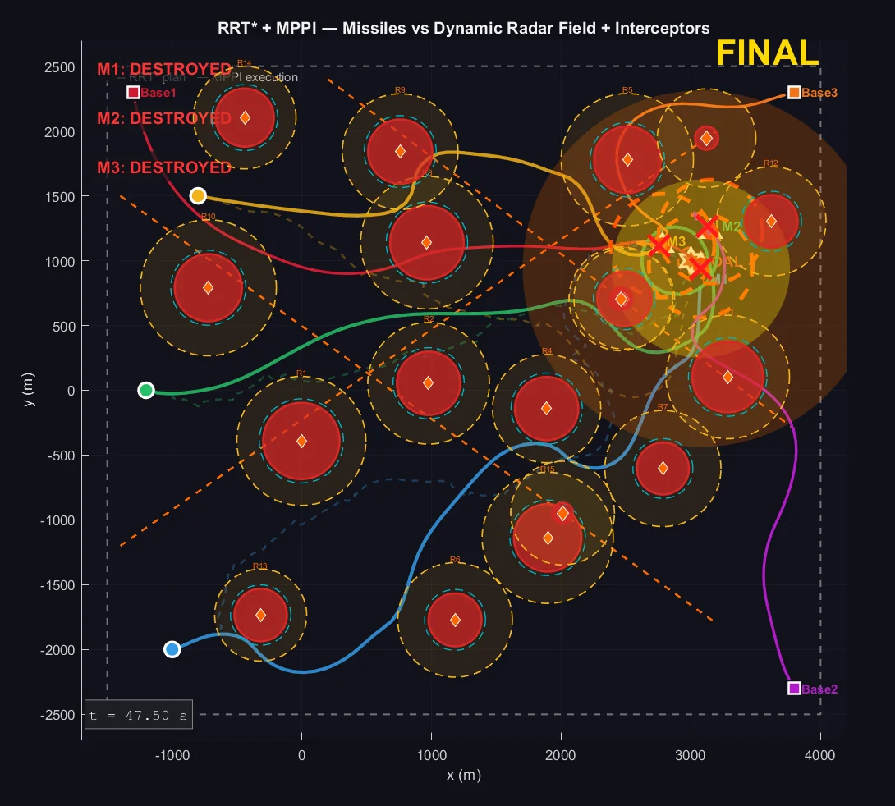
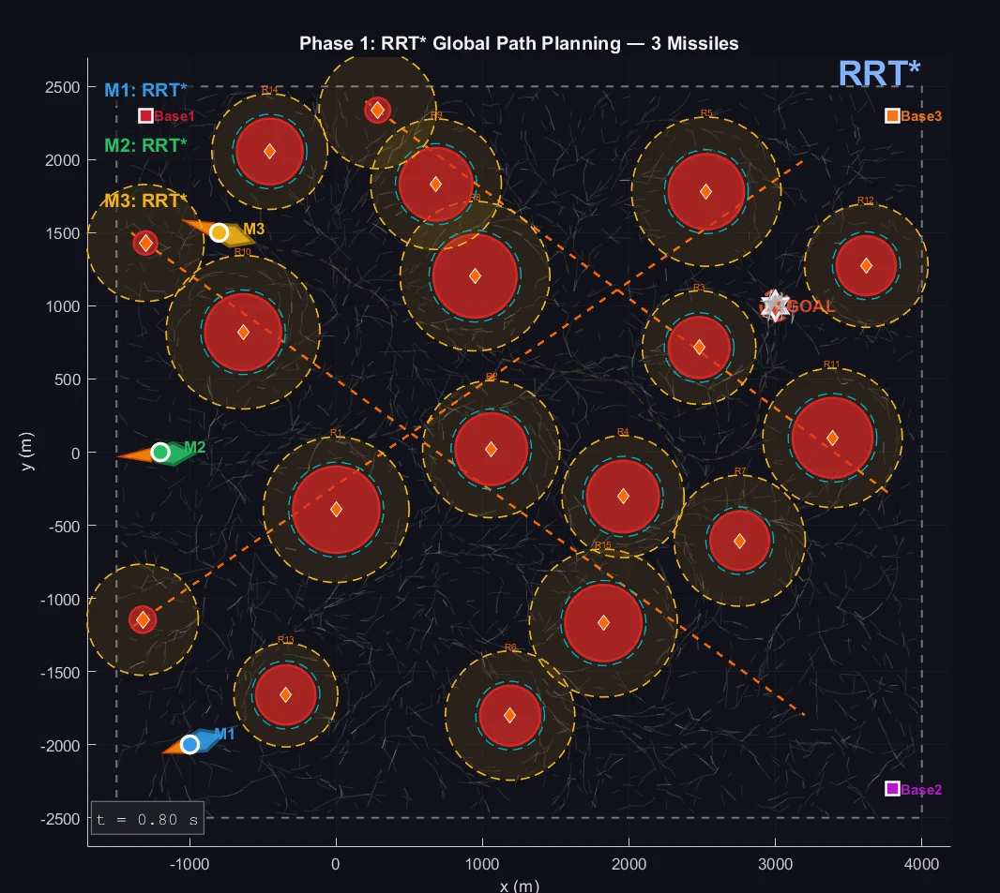
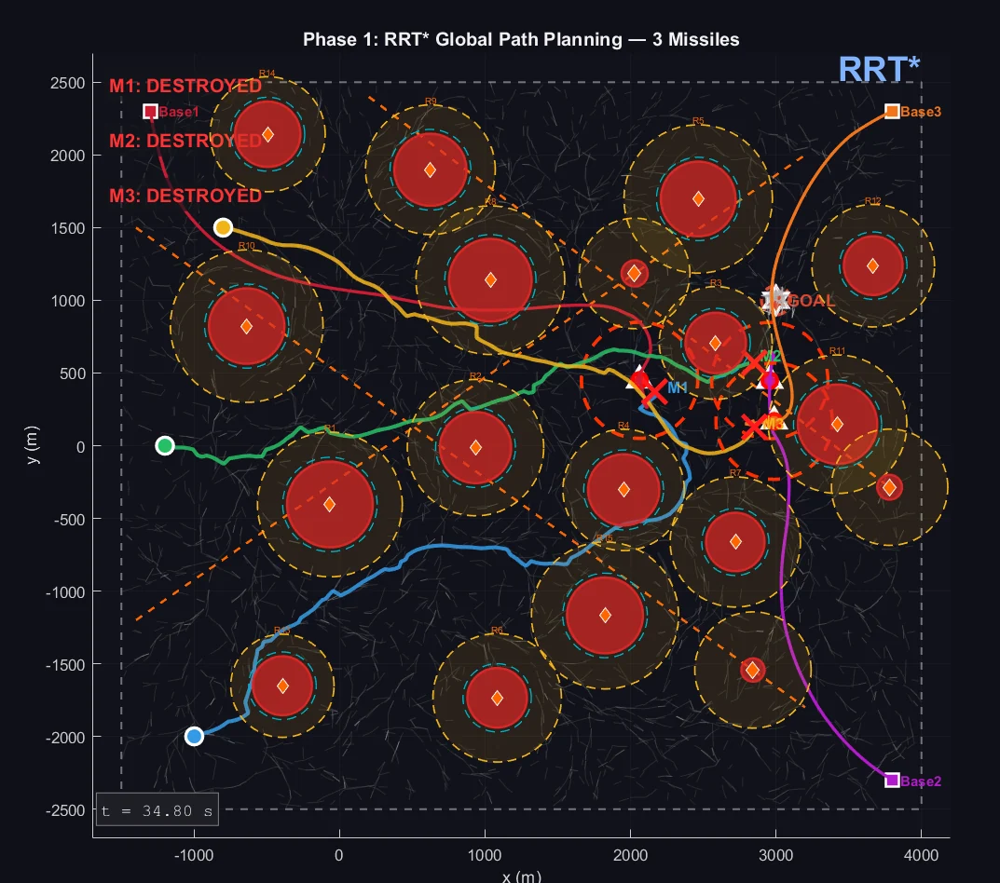

Guidance and motion planning
Hierarchical GNC Framework
RRT* global planning coupled with MPPI control for autonomous navigation through radar-defended airspace.
In progress A 6-DOF version of this framework. The results below are from the planar version in the paper.
- Designed a two-layer architecture: RRT* plans each global reference path offline, and MPPI re-optimizes control every 0.5 s to track it through moving threats.
- Simulated three missiles crossing a field of 15 orbiting radars and 3 patrol radars while evading 3 proportional-navigation interceptors.
- Implemented time-indexed collision checking in RRT* and stochastic MPPI control with adaptive noise scaling and dynamic cost weights.
- Found that RRT* produced a valid path in 91.67% of cases, so most failures came from execution and interception, not global planning.
- Identified terminal funneling as the dominant failure mode and proposed RRT-X replanning as the next improvement.
- Mission success
- 63.67%
- Monte Carlo trials
- 300
- RRT* path success
- 91.67%
- Rollouts per update
- 1,024
- Horizon
- 50 steps, 25 s
- Operational area
- 5,500 × 5,000 m

Simulation replays · recorded from the project


| Missile | Success | Time, s | Fallback |
|---|---|---|---|
| M1 | 85.0% | 45.69 | 0.136 |
| M2 | 41.0% | 42.60 | 0.153 |
| M3 | 65.0% | 41.82 | 0.159 |
| Overall | 63.67% | 43.71 | 0.150 |